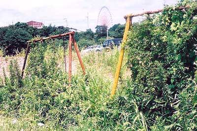
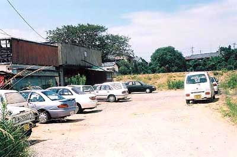
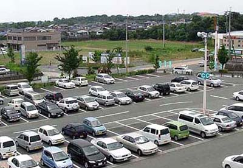
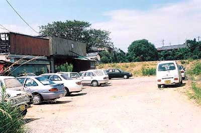
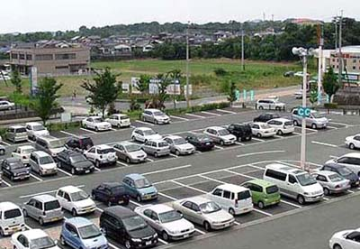
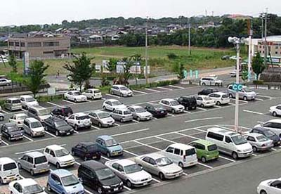

道の両脇に社宅が建ち並んでいた。その道の脇で猫が 死んでいた。社宅跡を象徴しているようだった。   奥が社宅共同浴場跡。手前左が当時の商店跡。  奥の空き地が檜町社宅跡。2004年8月2日荒尾シティモール屋上から撮る。
 奥が社宅共同浴場跡。手前左が当時の商店跡。  奥の空き地が檜町社宅跡。2004年8月2日荒尾シティモール屋上から撮る。
奥が社宅共同浴場跡。手前左が当時の商店跡。  奥の空き地が檜町社宅跡。2004年8月2日荒尾シティモール屋上から撮る。
奥の空き地が檜町社宅跡。2004年8月2日荒尾シティモール屋上から撮る。